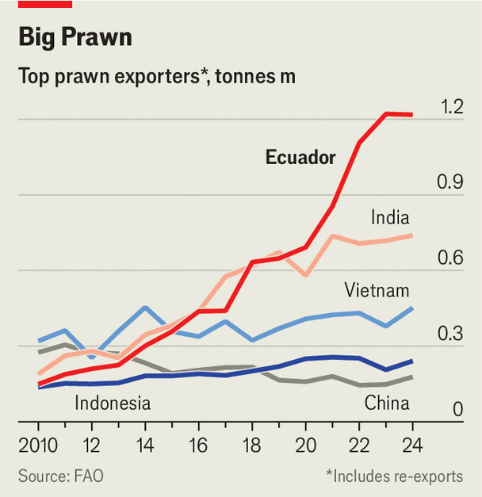

A prawn superpower rises
Ecuador’s farmers have embraced technology to great effect

Sep 3rd 2026
The production of prawns in Ecuador is lean manufacturing incarnate. Vast rectangular pools tessellate the Guayas delta, centre of the aquaculture belt. Its brackish waters hide billions of translucent bodies. Larvae are cultivated in greenhouse-style hatcheries, fattened in open-air ponds, hoovered into lorries, then taken to packaging plants where they are frozen. Inefficiencies are constantly hunted down. Containers filled with bricks of prawns known as “HOSO” (head-on, shell-on) cross the oceans, mostly east to west across the Pacific. “It is like a factory,” says Wolfgang Harten of Grupo Almar, the country’s second-largest producer.

That factory is running flat out. Shipments have quadrupled in the past decade. In 2020 Ecuador surpassed India as the world’s top exporter (see chart). Last year it sold more than $8bn-worth of prawns, more than India, Vietnam and Indonesia combined. Once an oil nation, Ecuador has become a pesco-state. Prawn production provides employment for about 1.6% of the population and furnishes 6% of GDP, a larger share than carmaking contributes in Germany. The sector has developed the country’s most advanced technology. The lorries that move prawns are escorted by armed guards. For coastal communities, a job at a prawn-processing mill is a ticket to the middle class.
Business wasn’t always this good. When Ecuador began cultivating prawns in the 1960s it was a cottage industry. Penaeus (Litopenaeus) vannamei, better known as king prawn or white-leg shrimp, is native to Latin America. Farmers collected wild larvae from nearby mangroves. Few bothered with selective breeding. Profits were high enough to drive expansion, but at great cost. By 2000 deforestation had halved the country’s mangroves. A global outbreak of white-spot disease bankrupted many farmers, killed 95% of prawns in infected ponds and cut output by 70% over two years.
Ecuador’s Asian rivals responded to the disease by intensifying production. Ponds were crammed with densities as high as 300 prawns per square metre. Larvae were isolated in labs to ensure they had never contracted white spot. Antibiotics became routine. Ecuador took the opposite path. Instead of trying to eliminate disease, producers adapted to it. Ponds were thinly stocked, with densities a tenth of Asia’s. Larvae were bred from the survivors of white spot, which had acquired resistance to it. Antibiotics were phased out.
The country improved its technology. Since the 2010s waves of innovation have put its farms at the frontier of marine tech. Many farmers in Asia still row out in a canoe twice a day to toss in a bag of feed. In Ecuador they own automatic feeders that drop pellets every three minutes. Underwater microphones record the click-click of chewing crustaceans to tell when they are full. Depending on consumption speed, ingredients are tailored for the next cycle, says Andrés Rivadulla of BioMar, a feed manufacturer. Aerators pump oxygen through each pond. Mechanical filtration reduces water pollution.
The results have been phenomenal. The combination of healthier prawns and better tech means that, although productivity is below that in places like Thailand and Indonesia, survival rates are far higher. Around 95% of prawns are harvested alive in Ecuador, compared with barely 80% in Asia, says Gorjan Nikolik of Rabobank, a Dutch lender. Minimising disease outbreaks lowers costs and stabilises yields. Cultivating a native species helps. Grupo Almar manages six annual cycles of 50 days, nearly twice the pace of competitors in India and Vietnam. This has helped consolidate prawn firms and integrate family farmers into well-capitalised corporations.
Geopolitics have also helped the South Americans. Ecuador is already the biggest supplier of prawns to the European Union and China. Yet it had long struggled to gain ground in North America, where India’s output dominated. Then along came Donald Trump. Ostensibly angry about India buying Russian oil, last year he hit its goods with a 50% tariff. Facing a combined duty of nearly 60% on Indian prawns versus 10% on the Ecuadorians, importers in the United States switched en masse. Americans now consume more prawns from Ecuador than from anywhere else; Ecuador kept its lead even after India’s duties were relaxed earlier this year.
In fact the main problem is over-production. Since recovering from the white-spot epidemic, farmers have boosted output by 15% per year. This has swamped markets, dragging prices to record lows. A kilogram of prawns cost $2.40 at the farm gate in Ecuador in May, compared with $2.99 in India and $5.32 in China. To shield its own producers, China sporadically restricts imports, claiming phytosanitary concerns. Brazil’s import duties are prohibitive. Mexico complains of smuggling. Then there is climate change, which actually increases oversupply. By raising temperatures on the Pacific coast, the El Niño weather phenomenon harms crops but stimulates prawns, which love heat.
So the priority is to boost demand. The Balkans and the Persian Gulf are seen as promising markets for HOSO. Companies are starting to make higher-value products for American consumers, such as peeled and breaded prawns. Fast-food shops are promoting prawn burgers while marketers extol the healthiness of prawn-based ceviche, tempura and risotto. “The best way to start your day is with a prawn omelette,” says José Antonio Camposano of the National Chamber of Aquaculture, an Ecuadorian trade-group. It may be working. Demand is up. But Ecuador’s prawn kings are hungry for more. ■